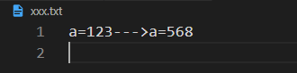
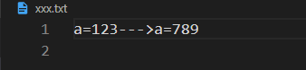
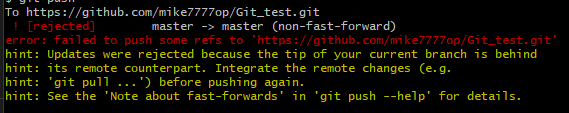
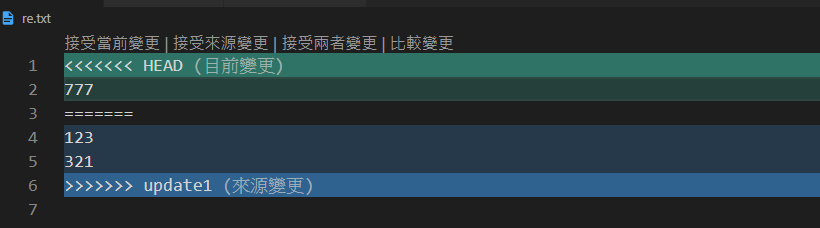

Git教學第三章:
上一頁講完了git reset與checkout，那我們這張來講conflict要怎麼解決
當我們需要跟別人一起修改同一支檔案時，難免會遇到conflict
假設A與B同時修改同一支檔案，A在xxx.txt檔案中把a=123改成a=568，B改成了a=789，並且同時commit到github上面
這時候就會產生conflict，這時我們就必須手動處理
假設我們是B，A已經push a=568的內容上去，而我們沒有pull下來，這時我們在push a=789上去時，我們在command裡可能會說明我們push failed，就代表可能發生衝突了
在git pull我們把檔案給拉下來，在vscode可以顯示A修改的內容與我們修改的版本(Current Change)，vscode上可以直接修改
如果是修改我們的vscode上可以按Accept Current Change，如果是把我們的版本改成A的版本，則Accept Incoming Change
一樣最後做git add . commit就可以了，然後push上去